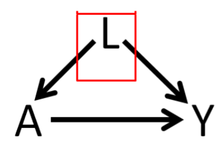
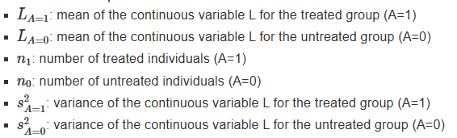

倾向性评分最大的优势是将多个混杂因素的多维影响用一维的倾向值（接受某处理的概率）来表示，即倾向性评分值（Propensity Score, PS），从而降低协变量的维度，因此该方法尤其适用于协变量较多的情况。
原理
因果推断

A： risk factors，例如治疗、干预、暴露
L：confounding factors，例如年龄、性别、bmi
Y：outcome，例如是否死亡，是否患病
因果推断的基本难题：2个实际结果，2个反事实结果
\[
Y=A\times Y(A=1) +(1-A)\times Y(A=0) \\ 其中A=0 或 1\\
\]
Rubin’s Causal Model
个体处理效应：
\[
ITE=\tau_i=y_i^1-y_i^0
\]
平均处理效应 Average Treatment Effect (ATE)
\[
\widehat {ATE} =E(\tau)=E(Y^1-Y^0)=E(Y^1)-E(Y^0)
\]
Show the code
require(kableExtra)
Person <- c("John","Jim","Jake","Cody","Luke")
Y1 <- c( 195, 100, 210, 155, 165)
Y0 <- c(245, 160, 270, 210, 230)
PotentialOutcomes <- data.frame(Person, Y1, Y0, TE = Y1-Y0)
mean.values <- c(NA, mean(PotentialOutcomes$Y1),
mean(PotentialOutcomes$Y0),
mean(PotentialOutcomes$TE))
PotentialOutcomes <- rbind(PotentialOutcomes, mean.values)
kable(PotentialOutcomes, booktabs = TRUE,
col.names = c("Person", "Y(1)", "Y(0)", "TE")) %>%
row_spec(6, bold = T, color = "white", background = "#D7261E")
| John |
195 |
245 |
-50 |
| Jim |
100 |
160 |
-60 |
| Jake |
210 |
270 |
-60 |
| Cody |
155 |
210 |
-55 |
| Luke |
165 |
230 |
-65 |
| NA |
165 |
223 |
-58 |
Show the code
Person <- c("John","Jim","Jake","Cody","Luke")
Y1 <- c( NA, 100, NA, 155, NA)
Y0 <- c(245, NA, 270, NA, 230)
PotentialOutcomes <- data.frame(Person, Y1, Y0, TE = Y1-Y0)
mean.values <- c(NA, mean(PotentialOutcomes$Y1, na.rm = TRUE),
mean(PotentialOutcomes$Y0, na.rm = TRUE),
mean(PotentialOutcomes$TE))
PotentialOutcomes <- rbind(PotentialOutcomes, round(mean.values,1))
PotentialOutcomes[6,4] <- round(mean(PotentialOutcomes$Y1, na.rm = TRUE)-
mean(PotentialOutcomes$Y0, na.rm = TRUE),1)
kable(PotentialOutcomes, booktabs = TRUE,
col.names = c("Person", "Y(1)", "Y(0)", "TE")) %>%
row_spec(6, bold = T, color = "white", background = "#D7261E")
| John |
NA |
245.0 |
NA |
| Jim |
100.0 |
NA |
NA |
| Jake |
NA |
270.0 |
NA |
| Cody |
155.0 |
NA |
NA |
| Luke |
NA |
230.0 |
NA |
| NA |
127.5 |
248.3 |
-120.8 |
Show the code
Person <- c("John","Jim","Jake","Cody","Luke")
A <- c( 0, 1, 0, 1, 0)
Y <- c(245, 100, 270, 155, 230)
RealOutcomes <- data.frame(Person, A, Y)
kable(RealOutcomes, booktabs = TRUE,
col.names = c("Person", "A", "Y"))
| John |
0 |
245 |
| Jim |
1 |
100 |
| Jake |
0 |
270 |
| Cody |
1 |
155 |
| Luke |
0 |
230 |
Show the code
round(coef(lm(Y~A)),1)
#> (Intercept) A
#> 248.3 -120.8
-120.8 从上面的潜在结果数据表中获得的ATE 不同。部分原因是由于有限样本偏差（只有 5 个数据点）而不是无限总体。如果我们有一个足够大的样本，我们预计估计值将接近真实的ATE -58
Average Treatment Effect Among the Treated (ATT)
\[
\widehat {ATT} =E(Y^1-Y^0|X=1)=E(Y^1|X=1)-E(Y^0|X=1)
\]
Show the code
Person <- c("John","Jim","Jake","Cody","Luke")
Y1 <- c( 195, 100, 210, 155, 165)
Y0 <- rep(NA, length(Y1))
Treated <- data.frame(Person, Y1, Y0, TE = Y1-Y0)
Treated[6,2] <- mean(Treated$Y1)
kable(Treated, booktabs = TRUE,
col.names = c("Person", "Y(1)", "Y(0)", "TE"))%>%
row_spec(6, bold = T, color = "white", background = "#D7261E")
| John |
195 |
NA |
NA |
| Jim |
100 |
NA |
NA |
| Jake |
210 |
NA |
NA |
| Cody |
155 |
NA |
NA |
| Luke |
165 |
NA |
NA |
| NA |
165 |
NA |
NA |
Average Treatment Effect Among the Control (ATC)
\[
\widehat {ATC} =E(Y^1-Y^0|X=0)=E(Y^1|X=0)-E(Y^0|X=0)
\]
Show the code
Person <- c( "Jack", "Dustin", "Cole", "Lucas", "Dylan")
Y0 <- c( 245, 160, 270, 210, 165)
Y1 <- rep(NA, length(Y0))
Untreated <- data.frame(Person, Y1, Y0, TE = Y1-Y0)
Untreated[6,3] <- mean(Untreated$Y0)
kable(Untreated, booktabs = TRUE,
col.names = c("Person", "Y(1)", "Y(0)", "TE"))%>%
row_spec(6, bold = T, color = "white", background = "#D7261E")
| Jack |
NA |
245 |
NA |
| Dustin |
NA |
160 |
NA |
| Cole |
NA |
270 |
NA |
| Lucas |
NA |
210 |
NA |
| Dylan |
NA |
165 |
NA |
| NA |
NA |
210 |
NA |
Average Treatment Effect Among the Evenly Matched (ATM) 专为倾向得分加权开发的相对较新的估计值，但与进行一对一匹配时的估计值密切相关。
\[
ATM_d=E(Y_1-Y_0|M_d=1)
\]
Identifiability Assumptions
| Exchangeability |
Y(1),Y(0)⊥A |
Treatment assignment is independent of the potential outcome |
| Positivity |
0<P(A=1)<1 |
Subjects are eligible to receive both treatment |
| Consistency |
Y=Y(a)∀A=a |
No multiple version of the treatment |
| No interference |
|
Treated one patient will not impact outcome for others |
预处理
用于倾向性评分的数据要进行一些预处理，比如因子化 和 缺失值处理 如算法插补（KNN、随机森林等），
流程
估计倾向得分：暴露模型
倾向得分是给定一组观察到的 covaraites 接受治疗、干预或暴露的条件概率 。
\[
PS=f(L) = Prob(A=1|L)
\]
PS 值的估计是以处理因素作为因变量，其他混杂因素作为自变量，通过建立一个模型来估计每个研究对象接受处理因素的可能性。目前用于估计 PS 值的方法有logistic 回归，分类树，Probit 回归、Bootstrapping、随机森林、梯度提升模型 （GBM） 等。其中 logistic 回归是目前最常用的方法。
模型选择：交互项（如果有证据表明年龄和性别在决定瑞舒伐他汀处方的可能性方面存在相互作用，我们应该在倾向评分模型中包括交互项 （年龄×性别） 以及主要效应。），多项式项，机器学习
-
变量选择：咨询相关领域专家，Build directed acyclic graph (DAG) from literature review
Select variables causing outcome
select variables causing both outcome and exposure
omit variables only causing exposure
omit variables in the causal pathway
omit variables that are effect of outcome
omit variables that are simply noise
共线性
| Regression (Gauss 1821 ††) |
|
Yes (Y∼A+L) |
| Propensity score matching (Rosenbaum and Rubin 1983) |
Yes (A∼L) |
Crude comparison on matched data (Y∼A) |
| Propensity score Weighting (Rosenbaum and Rubin 1983) |
Yes (A∼L) |
Crude comparison on weighted data (Y∼A) |
| Propensity score double adjustment |
Yes (A∼L) |
Yes (Y∼A+L) |
| Decision tree-based method (Breiman et al. 1984) |
|
Yes (Y∼A+L) |
| Random Forest (Ho 1995) |
|
Yes (Y∼A+L) |
平衡倾向得分方法
倾向性评分只是一个分数（条件概率），自己并没有均衡协变量（混杂因素）的能力，利用 PS 值均衡组间协变量分布的方法有匹配（matching）、分层（stratification）、协变量调整（covariate adjustment, PS用作协变量）和加权（weighting）等。
平衡诊断 balance diagnosis：对于处理单元和对照单元成对的匹配方法，可以使用相关样本检验（例如，连续变量的 t 检验和分类变量的卡方检验），但是犯 I 类和 II 类错误的可能性非常高。
Statistical tests are affected by sample size
- t-test
- McNemar tests
- Wilcoxon rank test
统计检验在总体水平上推断平衡，但我们真正感兴趣的是样本水平的平衡
PSAgraphics标准化的效应大小和图形表示，建议effect sizes小于 0.1。 连续变量的平衡诊断箱线图，分类变量的条形图
standardized mean differences (SMD)
\[
SMD_{continuous} = \frac{\bar{L}_{A=1} - \bar{L}_{A=0}}{\sqrt{\frac{(n_1 - 1) \cdot s^2_{A=1} + (n_0 - 1) \cdot s^2_{A=0}}{n_1 + n_0 - 2}}}
\]

\[
SMD_{binary} = \frac{\hat{p}_{A=1} - \hat{p}_{A=0}}{\sqrt{\frac{\hat{p}_{A=1} \times (1 - \hat{p}_{A=1}) + \hat{p}_{A=0} \times (1 - \hat{p}_{A=0})}{2}}}
\\
其中\hat p 是两个二分类组的比例。
\]
一般认为SMD<0.1即可
Variance ratio（VR）
cut-points： 0.5~2
overlapping histograms
love plot
balance tables
估计因果效应：结局建模
outcome modelling
\[
Prob(T=1|A=1)
\]
进行 PSA 之前，将倾向得分（PS）与结果（outcome）根据治疗、干预或暴露（group）作图通常很有帮助。 Loess 回归线散点图
分五层的倾向得分评估图，相关样本评估图
Variance estimation: Cluster options, Bootstrap options
敏感性分析报告
在研究问题和基本假设的背景下报告结果并解释治疗效果估计。
局限性和潜在偏倚，并报告有用的敏感性分析的结果
检查未观察到的混杂因素confounding factor 的敏感性：Rosenbaum bounds， Quantitative bias analysis,E-value，
评估因果估计的稳健性
敏感度分析：仅针对匹配方法进行了明确定义
自举法：PSAboot